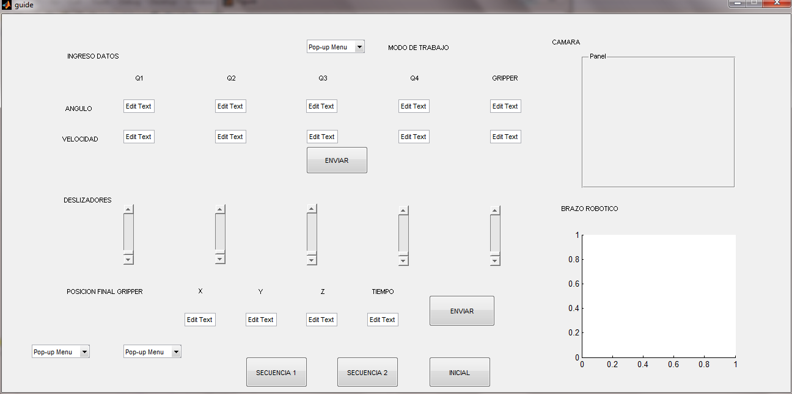

function varargout = guide(varargin) % GUIDE M-file for guide.fig % GUIDE, by itself, creates a new GUIDE or raises the existing % singleton*. % % H = GUIDE returns the handle to a new GUIDE or the handle to % the existing singleton*. % % GUIDE('CALLBACK',hObject,eventData,handles,...) calls the local % function named CALLBACK in GUIDE.M with the given input arguments. % % GUIDE('Property','Value',...) creates a new GUIDE or raises the % existing singleton*. Starting from the left, property value pairs are % applied to the GUI before guide_OpeningFcn gets called. An % unrecognized property name or invalid value makes property application % stop. All inputs are passed to guide_OpeningFcn via varargin. % % *See GUI Options on GUIDE's Tools menu. Choose "GUI allows only one % instance to run (singleton)". % % See also: GUIDE, GUIDATA, GUIHANDLES % Edit the above text to modify the response to help guide % Last Modified by GUIDE v2.5 24-Nov-2012 21:03:39 % Begin initialization code - DO NOT EDIT gui_Singleton = 1; gui_State = struct('gui_Name', mfilename, ... 'gui_Singleton', gui_Singleton, ... 'gui_OpeningFcn', @guide_OpeningFcn, ... 'gui_OutputFcn', @guide_OutputFcn, ... 'gui_LayoutFcn', [] , ... 'gui_Callback', []); if nargin && ischar(varargin{1}) gui_State.gui_Callback = str2func(varargin{1}); end if nargout [varargout{1:nargout}] = gui_mainfcn(gui_State, varargin{:}); else gui_mainfcn(gui_State, varargin{:}); end % End initialization code - DO NOT EDIT % --- Executes just before guide is made visible. function guide_OpeningFcn(hObject, eventdata, handles, varargin) % This function has no output args, see OutputFcn. % hObject handle to figure % eventdata reserved - to be defined in a future version of MATLAB % handles structure with handles and user data (see GUIDATA) % varargin command line arguments to guide (see VARARGIN) % Choose default command line output for guide handles.output = hObject; % Update handles structure guidata(hObject, handles); % UIWAIT makes guide wait for user response (see UIRESUME) % uiwait(handles.figure1); % --- Outputs from this function are returned to the command line. function varargout = guide_OutputFcn(hObject, eventdata, handles) % varargout cell array for returning output args (see VARARGOUT); % hObject handle to figure % eventdata reserved - to be defined in a future version of MATLAB % handles structure with handles and user data (see GUIDATA) % Get default command line output from handles structure varargout{1} = handles.output; function edit1_Callback(hObject, eventdata, handles) % hObject handle to edit1 (see GCBO) % eventdata reserved - to be defined in a future version of MATLAB % handles structure with handles and user data (see GUIDATA) % Hints: get(hObject,'String') returns contents of edit1 as text % str2double(get(hObject,'String')) returns contents of edit1 as a double % --- Executes during object creation, after setting all properties. function edit1_CreateFcn(hObject, eventdata, handles) % hObject handle to edit1 (see GCBO) % eventdata reserved - to be defined in a future version of MATLAB % handles empty - handles not created until after all CreateFcns called % Hint: edit controls usually have a white background on Windows. % See ISPC and COMPUTER. if ispc && isequal(get(hObject,'BackgroundColor'), get(0,'defaultUicontrolBackgroundColor')) set(hObject,'BackgroundColor','white'); end function edit2_Callback(hObject, eventdata, handles) % hObject handle to edit2 (see GCBO) % eventdata reserved - to be defined in a future version of MATLAB % handles structure with handles and user data (see GUIDATA) % Hints: get(hObject,'String') returns contents of edit2 as text % str2double(get(hObject,'String')) returns contents of edit2 as a double % --- Executes during object creation, after setting all properties. function edit2_CreateFcn(hObject, eventdata, handles) % hObject handle to edit2 (see GCBO) % eventdata reserved - to be defined in a future version of MATLAB % handles empty - handles not created until after all CreateFcns called % Hint: edit controls usually have a white background on Windows. % See ISPC and COMPUTER. if ispc && isequal(get(hObject,'BackgroundColor'), get(0,'defaultUicontrolBackgroundColor')) set(hObject,'BackgroundColor','white'); end function edit3_Callback(hObject, eventdata, handles) % hObject handle to edit3 (see GCBO) % eventdata reserved - to be defined in a future version of MATLAB % handles structure with handles and user data (see GUIDATA) % Hints: get(hObject,'String') returns contents of edit3 as text % str2double(get(hObject,'String')) returns contents of edit3 as a double % --- Executes during object creation, after setting all properties. function edit3_CreateFcn(hObject, eventdata, handles) % hObject handle to edit3 (see GCBO) % eventdata reserved - to be defined in a future version of MATLAB % handles empty - handles not created until after all CreateFcns called % Hint: edit controls usually have a white background on Windows. % See ISPC and COMPUTER. if ispc && isequal(get(hObject,'BackgroundColor'), get(0,'defaultUicontrolBackgroundColor')) set(hObject,'BackgroundColor','white'); end function edit4_Callback(hObject, eventdata, handles) % hObject handle to edit4 (see GCBO) % eventdata reserved - to be defined in a future version of MATLAB % handles structure with handles and user data (see GUIDATA) % Hints: get(hObject,'String') returns contents of edit4 as text % str2double(get(hObject,'String')) returns contents of edit4 as a double % --- Executes during object creation, after setting all properties. function edit4_CreateFcn(hObject, eventdata, handles) % hObject handle to edit4 (see GCBO) % eventdata reserved - to be defined in a future version of MATLAB % handles empty - handles not created until after all CreateFcns called % Hint: edit controls usually have a white background on Windows. % See ISPC and COMPUTER. if ispc && isequal(get(hObject,'BackgroundColor'), get(0,'defaultUicontrolBackgroundColor')) set(hObject,'BackgroundColor','white'); end function edit5_Callback(hObject, eventdata, handles) % hObject handle to edit5 (see GCBO) % eventdata reserved - to be defined in a future version of MATLAB % handles structure with handles and user data (see GUIDATA) % Hints: get(hObject,'String') returns contents of edit5 as text % str2double(get(hObject,'String')) returns contents of edit5 as a double % --- Executes during object creation, after setting all properties. function edit5_CreateFcn(hObject, eventdata, handles) % hObject handle to edit5 (see GCBO) % eventdata reserved - to be defined in a future version of MATLAB % handles empty - handles not created until after all CreateFcns called % Hint: edit controls usually have a white background on Windows. % See ISPC and COMPUTER. if ispc && isequal(get(hObject,'BackgroundColor'), get(0,'defaultUicontrolBackgroundColor')) set(hObject,'BackgroundColor','white'); end function edit6_Callback(hObject, eventdata, handles) % hObject handle to edit6 (see GCBO) % eventdata reserved - to be defined in a future version of MATLAB % handles structure with handles and user data (see GUIDATA) % Hints: get(hObject,'String') returns contents of edit6 as text % str2double(get(hObject,'String')) returns contents of edit6 as a double % --- Executes during object creation, after setting all properties. function edit6_CreateFcn(hObject, eventdata, handles) % hObject handle to edit6 (see GCBO) % eventdata reserved - to be defined in a future version of MATLAB % handles empty - handles not created until after all CreateFcns called % Hint: edit controls usually have a white background on Windows. % See ISPC and COMPUTER. if ispc && isequal(get(hObject,'BackgroundColor'), get(0,'defaultUicontrolBackgroundColor')) set(hObject,'BackgroundColor','white'); end function edit7_Callback(hObject, eventdata, handles) % hObject handle to edit7 (see GCBO) % eventdata reserved - to be defined in a future version of MATLAB % handles structure with handles and user data (see GUIDATA) % Hints: get(hObject,'String') returns contents of edit7 as text % str2double(get(hObject,'String')) returns contents of edit7 as a double % --- Executes during object creation, after setting all properties. function edit7_CreateFcn(hObject, eventdata, handles) % hObject handle to edit7 (see GCBO) % eventdata reserved - to be defined in a future version of MATLAB % handles empty - handles not created until after all CreateFcns called % Hint: edit controls usually have a white background on Windows. % See ISPC and COMPUTER. if ispc && isequal(get(hObject,'BackgroundColor'), get(0,'defaultUicontrolBackgroundColor')) set(hObject,'BackgroundColor','white'); end function edit8_Callback(hObject, eventdata, handles) % hObject handle to edit8 (see GCBO) % eventdata reserved - to be defined in a future version of MATLAB % handles structure with handles and user data (see GUIDATA) % Hints: get(hObject,'String') returns contents of edit8 as text % str2double(get(hObject,'String')) returns contents of edit8 as a double % --- Executes during object creation, after setting all properties. function edit8_CreateFcn(hObject, eventdata, handles) % hObject handle to edit8 (see GCBO) % eventdata reserved - to be defined in a future version of MATLAB % handles empty - handles not created until after all CreateFcns called % Hint: edit controls usually have a white background on Windows. % See ISPC and COMPUTER. if ispc && isequal(get(hObject,'BackgroundColor'), get(0,'defaultUicontrolBackgroundColor')) set(hObject,'BackgroundColor','white'); end function edit9_Callback(hObject, eventdata, handles) % hObject handle to edit9 (see GCBO) % eventdata reserved - to be defined in a future version of MATLAB % handles structure with handles and user data (see GUIDATA) % Hints: get(hObject,'String') returns contents of edit9 as text % str2double(get(hObject,'String')) returns contents of edit9 as a double % --- Executes during object creation, after setting all properties. function edit9_CreateFcn(hObject, eventdata, handles) % hObject handle to edit9 (see GCBO) % eventdata reserved - to be defined in a future version of MATLAB % handles empty - handles not created until after all CreateFcns called % Hint: edit controls usually have a white background on Windows. % See ISPC and COMPUTER. if ispc && isequal(get(hObject,'BackgroundColor'), get(0,'defaultUicontrolBackgroundColor')) set(hObject,'BackgroundColor','white'); end function edit10_Callback(hObject, eventdata, handles) % hObject handle to edit10 (see GCBO) % eventdata reserved - to be defined in a future version of MATLAB % handles structure with handles and user data (see GUIDATA) % Hints: get(hObject,'String') returns contents of edit10 as text % str2double(get(hObject,'String')) returns contents of edit10 as a double % --- Executes during object creation, after setting all properties. function edit10_CreateFcn(hObject, eventdata, handles) % hObject handle to edit10 (see GCBO) % eventdata reserved - to be defined in a future version of MATLAB % handles empty - handles not created until after all CreateFcns called % Hint: edit controls usually have a white background on Windows. % See ISPC and COMPUTER. if ispc && isequal(get(hObject,'BackgroundColor'), get(0,'defaultUicontrolBackgroundColor')) set(hObject,'BackgroundColor','white'); end % --- Executes on slider movement. function slider1_Callback(hObject, eventdata, handles) % hObject handle to slider1 (see GCBO) % eventdata reserved - to be defined in a future version of MATLAB % handles structure with handles and user data (see GUIDATA) % Hints: get(hObject,'Value') returns position of slider % get(hObject,'Min') and get(hObject,'Max') to determine range of slider % --- Executes during object creation, after setting all properties. function slider1_CreateFcn(hObject, eventdata, handles) % hObject handle to slider1 (see GCBO) % eventdata reserved - to be defined in a future version of MATLAB % handles empty - handles not created until after all CreateFcns called % Hint: slider controls usually have a light gray background. if isequal(get(hObject,'BackgroundColor'), get(0,'defaultUicontrolBackgroundColor')) set(hObject,'BackgroundColor',[.9 .9 .9]); end % --- Executes on slider movement. function slider2_Callback(hObject, eventdata, handles) % hObject handle to slider2 (see GCBO) % eventdata reserved - to be defined in a future version of MATLAB % handles structure with handles and user data (see GUIDATA) % Hints: get(hObject,'Value') returns position of slider % get(hObject,'Min') and get(hObject,'Max') to determine range of slider % --- Executes during object creation, after setting all properties. function slider2_CreateFcn(hObject, eventdata, handles) % hObject handle to slider2 (see GCBO) % eventdata reserved - to be defined in a future version of MATLAB % handles empty - handles not created until after all CreateFcns called % Hint: slider controls usually have a light gray background. if isequal(get(hObject,'BackgroundColor'), get(0,'defaultUicontrolBackgroundColor')) set(hObject,'BackgroundColor',[.9 .9 .9]); end % --- Executes on slider movement. function slider3_Callback(hObject, eventdata, handles) % hObject handle to slider3 (see GCBO) % eventdata reserved - to be defined in a future version of MATLAB % handles structure with handles and user data (see GUIDATA) % Hints: get(hObject,'Value') returns position of slider % get(hObject,'Min') and get(hObject,'Max') to determine range of slider % --- Executes during object creation, after setting all properties. function slider3_CreateFcn(hObject, eventdata, handles) % hObject handle to slider3 (see GCBO) % eventdata reserved - to be defined in a future version of MATLAB % handles empty - handles not created until after all CreateFcns called % Hint: slider controls usually have a light gray background. if isequal(get(hObject,'BackgroundColor'), get(0,'defaultUicontrolBackgroundColor')) set(hObject,'BackgroundColor',[.9 .9 .9]); end % --- Executes on slider movement. function slider4_Callback(hObject, eventdata, handles) % hObject handle to slider4 (see GCBO) % eventdata reserved - to be defined in a future version of MATLAB % handles structure with handles and user data (see GUIDATA) % Hints: get(hObject,'Value') returns position of slider % get(hObject,'Min') and get(hObject,'Max') to determine range of slider % --- Executes during object creation, after setting all properties. function slider4_CreateFcn(hObject, eventdata, handles) % hObject handle to slider4 (see GCBO) % eventdata reserved - to be defined in a future version of MATLAB % handles empty - handles not created until after all CreateFcns called % Hint: slider controls usually have a light gray background. if isequal(get(hObject,'BackgroundColor'), get(0,'defaultUicontrolBackgroundColor')) set(hObject,'BackgroundColor',[.9 .9 .9]); end % --- Executes on slider movement. function slider5_Callback(hObject, eventdata, handles) % hObject handle to slider5 (see GCBO) % eventdata reserved - to be defined in a future version of MATLAB % handles structure with handles and user data (see GUIDATA) % Hints: get(hObject,'Value') returns position of slider % get(hObject,'Min') and get(hObject,'Max') to determine range of slider % --- Executes during object creation, after setting all properties. function slider5_CreateFcn(hObject, eventdata, handles) % hObject handle to slider5 (see GCBO) % eventdata reserved - to be defined in a future version of MATLAB % handles empty - handles not created until after all CreateFcns called % Hint: slider controls usually have a light gray background. if isequal(get(hObject,'BackgroundColor'), get(0,'defaultUicontrolBackgroundColor')) set(hObject,'BackgroundColor',[.9 .9 .9]); end % --- Executes on selection change in popupmenu1. function popupmenu1_Callback(hObject, eventdata, handles) % hObject handle to popupmenu1 (see GCBO) % eventdata reserved - to be defined in a future version of MATLAB % handles structure with handles and user data (see GUIDATA) % Hints: contents = cellstr(get(hObject,'String')) returns popupmenu1 contents as cell array % contents{get(hObject,'Value')} returns selected item from popupmenu1 % --- Executes during object creation, after setting all properties. function popupmenu1_CreateFcn(hObject, eventdata, handles) % hObject handle to popupmenu1 (see GCBO) % eventdata reserved - to be defined in a future version of MATLAB % handles empty - handles not created until after all CreateFcns called % Hint: popupmenu controls usually have a white background on Windows. % See ISPC and COMPUTER. if ispc && isequal(get(hObject,'BackgroundColor'), get(0,'defaultUicontrolBackgroundColor')) set(hObject,'BackgroundColor','white'); end % --- Executes on button press in pushbutton1. function pushbutton1_Callback(hObject, eventdata, handles) % hObject handle to pushbutton1 (see GCBO) % eventdata reserved - to be defined in a future version of MATLAB % handles structure with handles and user data (see GUIDATA) % --- Executes on button press in pushbutton2. function pushbutton2_Callback(hObject, eventdata, handles) % hObject handle to pushbutton2 (see GCBO) % eventdata reserved - to be defined in a future version of MATLAB % handles structure with handles and user data (see GUIDATA) % --- Executes on selection change in PUERTO. function PUERTO_Callback(hObject, eventdata, handles) % hObject handle to PUERTO (see GCBO) % eventdata reserved - to be defined in a future version of MATLAB % handles structure with handles and user data (see GUIDATA) % Hints: contents = cellstr(get(hObject,'String')) returns PUERTO contents as cell array % contents{get(hObject,'Value')} returns selected item from PUERTO % --- Executes during object creation, after setting all properties. function PUERTO_CreateFcn(hObject, eventdata, handles) % hObject handle to PUERTO (see GCBO) % eventdata reserved - to be defined in a future version of MATLAB % handles empty - handles not created until after all CreateFcns called % Hint: popupmenu controls usually have a white background on Windows. % See ISPC and COMPUTER. if ispc && isequal(get(hObject,'BackgroundColor'), get(0,'defaultUicontrolBackgroundColor')) set(hObject,'BackgroundColor','white'); end % --- Executes on button press in pushbutton3. function pushbutton3_Callback(hObject, eventdata, handles) % hObject handle to pushbutton3 (see GCBO) % eventdata reserved - to be defined in a future version of MATLAB % handles structure with handles and user data (see GUIDATA) % --- Executes on button press in pushbutton4. function pushbutton4_Callback(hObject, eventdata, handles) % hObject handle to pushbutton4 (see GCBO) % eventdata reserved - to be defined in a future version of MATLAB % handles structure with handles and user data (see GUIDATA) % --- Executes on button press in pushbutton5. function pushbutton5_Callback(hObject, eventdata, handles) % hObject handle to pushbutton5 (see GCBO) % eventdata reserved - to be defined in a future version of MATLAB % handles structure with handles and user data (see GUIDATA) function edit11_Callback(hObject, eventdata, handles) % hObject handle to edit11 (see GCBO) % eventdata reserved - to be defined in a future version of MATLAB % handles structure with handles and user data (see GUIDATA) % Hints: get(hObject,'String') returns contents of edit11 as text % str2double(get(hObject,'String')) returns contents of edit11 as a double % --- Executes during object creation, after setting all properties. function edit11_CreateFcn(hObject, eventdata, handles) % hObject handle to edit11 (see GCBO) % eventdata reserved - to be defined in a future version of MATLAB % handles empty - handles not created until after all CreateFcns called % Hint: edit controls usually have a white background on Windows. % See ISPC and COMPUTER. if ispc && isequal(get(hObject,'BackgroundColor'), get(0,'defaultUicontrolBackgroundColor')) set(hObject,'BackgroundColor','white'); end function edit12_Callback(hObject, eventdata, handles) % hObject handle to edit12 (see GCBO) % eventdata reserved - to be defined in a future version of MATLAB % handles structure with handles and user data (see GUIDATA) % Hints: get(hObject,'String') returns contents of edit12 as text % str2double(get(hObject,'String')) returns contents of edit12 as a double % --- Executes during object creation, after setting all properties. function edit12_CreateFcn(hObject, eventdata, handles) % hObject handle to edit12 (see GCBO) % eventdata reserved - to be defined in a future version of MATLAB % handles empty - handles not created until after all CreateFcns called % Hint: edit controls usually have a white background on Windows. % See ISPC and COMPUTER. if ispc && isequal(get(hObject,'BackgroundColor'), get(0,'defaultUicontrolBackgroundColor')) set(hObject,'BackgroundColor','white'); end function edit13_Callback(hObject, eventdata, handles) % hObject handle to edit13 (see GCBO) % eventdata reserved - to be defined in a future version of MATLAB % handles structure with handles and user data (see GUIDATA) % Hints: get(hObject,'String') returns contents of edit13 as text % str2double(get(hObject,'String')) returns contents of edit13 as a double % --- Executes during object creation, after setting all properties. function edit13_CreateFcn(hObject, eventdata, handles) % hObject handle to edit13 (see GCBO) % eventdata reserved - to be defined in a future version of MATLAB % handles empty - handles not created until after all CreateFcns called % Hint: edit controls usually have a white background on Windows. % See ISPC and COMPUTER. if ispc && isequal(get(hObject,'BackgroundColor'), get(0,'defaultUicontrolBackgroundColor')) set(hObject,'BackgroundColor','white'); end function edit14_Callback(hObject, eventdata, handles) % hObject handle to edit14 (see GCBO) % eventdata reserved - to be defined in a future version of MATLAB % handles structure with handles and user data (see GUIDATA) % Hints: get(hObject,'String') returns contents of edit14 as text % str2double(get(hObject,'String')) returns contents of edit14 as a double % --- Executes during object creation, after setting all properties. function edit14_CreateFcn(hObject, eventdata, handles) % hObject handle to edit14 (see GCBO) % eventdata reserved - to be defined in a future version of MATLAB % handles empty - handles not created until after all CreateFcns called % Hint: edit controls usually have a white background on Windows. % See ISPC and COMPUTER. if ispc && isequal(get(hObject,'BackgroundColor'), get(0,'defaultUicontrolBackgroundColor')) set(hObject,'BackgroundColor','white'); end % --- Executes on selection change in BAUDIOS. function BAUDIOS_Callback(hObject, eventdata, handles) % hObject handle to BAUDIOS (see GCBO) % eventdata reserved - to be defined in a future version of MATLAB % handles structure with handles and user data (see GUIDATA) % Hints: contents = cellstr(get(hObject,'String')) returns BAUDIOS contents as cell array % contents{get(hObject,'Value')} returns selected item from BAUDIOS % --- Executes during object creation, after setting all properties. function BAUDIOS_CreateFcn(hObject, eventdata, handles) % hObject handle to BAUDIOS (see GCBO) % eventdata reserved - to be defined in a future version of MATLAB % handles empty - handles not created until after all CreateFcns called % Hint: popupmenu controls usually have a white background on Windows. % See ISPC and COMPUTER. if ispc && isequal(get(hObject,'BackgroundColor'), get(0,'defaultUicontrolBackgroundColor')) set(hObject,'BackgroundColor','white'); end